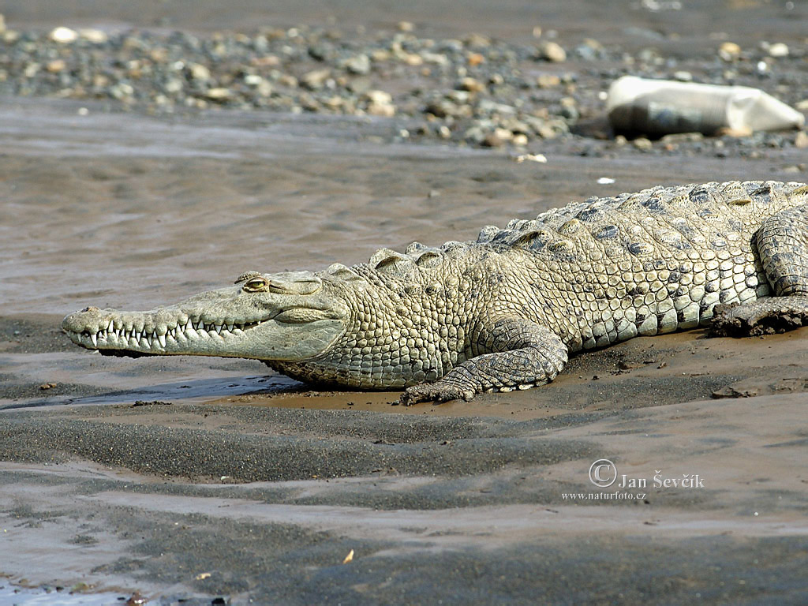

Krokodýl nilský (Crocodylus niloticus)
Fyzický popis
Krokodýl nilský má šedé až tmavě olivové zbarvení prokládané světlejšími místy. Tělo je široké a mohutné a hřbet i ocas jsou pokryty hrbolky a výstupky. Hlava je oproti aligátorovi úzká a dlouhá a podle některých zdrojů váží u velkých samců 90-100 kg. Oči, uči a nos má krokodýl v jedné rovině a když je ponořený, tak jsou z něj vidět jen tyto části hlavy, zbytek těla je pod vodou. Jeden z rozdílů mezi aligátorem a krokodýlem je ten, ze při zavřené tlamě má krokodýl na spodní čelisti viditelný 4 zub. Krokodýl má 64-68 špičatých zubů a může s nimi pouze kousat a trhat, nemůže žvýkat. Krokodýlům se zuby vyměňují jako žralokům, když se nějaký vylomí, je nahrazen zubem, který vyrůstá pod právě vylomeným. Na rozdíl od žraloků, kteří mají zuby v několika řadách za sebou, krokodýli mají nové zuby pod starými jako naskládané kornoutky zmrzliny na sobě. Samec je větší než samice. Krokodýl se pohybuje ve vodě pomocí mohutného ocasu, který používá i při lovu.
Chování
Krokodýli žijí někdy jako samotáři a jindy ve skupinách. Samci jsou teritoriální, někdy i agresivní a zabíjejí ostatní samce i samice a mladé jedince.
Potrava a lov
Krokodýl je úspěšný predátor, jeho kořistí jsou savci, plazi i ptáci. Dokáže se pomocí silného ocasu vymrštit nad hladinu vody a chytit ptáka sedícího na větvi a stejně tak je schopný zabít například buvola, antilopu, jiné krokodýly a také jiné predátory jako lvy, hyeny, levharty, kteří se přisli napít do jeho loviště. Jsou zaznamenány i případy, kdy zabil mladého hrocha a slona. Větší kořist loví tak, že se k ní pomalu přikrade pod vodou a pak pomocí ocasu prudce vyrazí a nic netušící oběť chytí za nohu, tělo nebo hlavu a okamžitě se ji snaží stáhnout pod vodu, kde ji utopí. Když jdou poblíž další krokodýli, tak se okamžitě připojují a kořist roztrhají na kusy. Krokodýl totiž nemůže žvýkat a tak polyká kusy masa nebo těla svých obětí. Dělají to tak, že se zakousnou do těla a otáčí se prudce kolem své osy a vyrvou tak z těla kus masa nebo oddělí končetiny od těla. Krokodýl má obrovskou sílu stisku, byl naměřen stisk o síle 1300 kg, ale na druhou stranu je možné lidskýma rukama udržet jeho čelist zavřenou, protože svaly které čelist otevírají jsou slabé.
Způsoby komunikace
- hlasová
- čichová
- tělesná